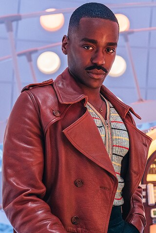

DestielsThird Text Post — fan spotted filming on location in Vancouver again. The amount of dedication from this crew never ceases to amaze me. >Supernatural
 SpoilersSweetie Text Post — just rewatched the finale for the tenth time. It still hits differently every single time. Anyone else find it gets more emotional with each rewatch? >Dr Who